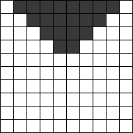
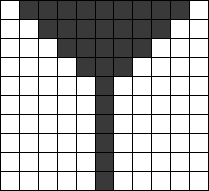

If we allow variables, then we can abbreviate this further:
How does this cellular automaton behave? If initially all the cells are white except for a contiguous group of black cells, the black cells shrink to either all white cells or one stable black cell. This can be seen in a two dimensional picture by showing the colors of the cells at successive times with time traveling downward.
|  |  |
Thus this rule essentially computes the remainder of numbers modulo 2. What other mathematical operations can nearest neighbor cellular automata perform? Can you find automata that add, subtract, multiply, or divide numbers? Can you build one that squares numbers? calculates primes? powers of 2? does division modulo n for other values of n?
Berend Jan van der Zwaag found several other automata. This one subtracts two numbers using the rules:
000111111101111000 000111111121111000 000111111022111000 000111111012211000 000111111212221000 000111110222220000 000111110122200000 000111112122000000 000111102220000000 000111101200000000 000111121000000000 000111020000000000 000111000000000000 000111000000000000
This one multiplies two numbers using the rules:
000000000111011100 000000000111211100 000000000112011100 000000000120011100 000000000300011100 000000000230011100 000000000233011100 000000000233311100 000000000233231100 000000000232013100 000000000220011400 000000000430011000 000000002433011000 000000003433311000 000000004433231000 000000024432014000 000000034420010000 000000044430010000 000000244433010000 000000344433310000 000000444433240000 000002444432410000 000003444424110000 000004444411110000 000024444111110000 000034441111110000 000044411111110000 000244111111110000 000341111111110000 000401111111110000 002001111111110000 000001111111110000 000001111111110000
And this one divides two numbers, rounding up:
001111111111110111000000
001111111111112111000000
001111111111123211000000
001111111111233221000000
000->0 100->0 200->0 300->1 400->4 001111111112333203000000
001->0 101->2 201-> 301->1 401->0 001111111123333234100000
002->0 102-> 202->0 302-> 402->4 001111111233333344100000
003->3 103-> 203->3 303-> 403->4 001111112333333144100000
004->0 104-> 204-> 304-> 404-> 001111123333333244100000
010->1 110->1 210->3 310->3 410->1 001111233333333224100000
011->1 111->1 211->2 311->3 411->1 001112333333333223100000
012->4 112->2 212-> 312-> 412-> 001123333333333234300000
013-> 113->1 213-> 313->3 413->1 001233333333333344110000
014-> 114-> 214-> 314->2 414->0 004333333333333144110000
020-> 120-> 220-> 320->2 420->4 000433333333333244110000
021->0 121->3 221->0 321->2 421-> 000043333333333224110000
022-> 122-> 222->2 322->2 422->4 000004333333333223110000
023-> 123->3 223->3 323->3 423->4 000000433333333234310000
024-> 124-> 224->2 324->2 424-> 000000043333333344130000
030->4 130->1 230->4 330->0 430->1 000000004333333144111000
031-> 131->1 231->4 331->3 431->1 000000000433333244111000
032-> 132-> 232->3 332->3 432->4 000000000043333224111000
033-> 133-> 233->3 333->3 433->4 000000000004333223111000
034->4 134-> 234->4 334->1 434-> 000000000000433234311000
040->0 140-> 240-> 340-> 440-> 000000000000043344131000
041->0 141->4 241->3 341->4 441->4 000000000000004144113000
042->0 142-> 242-> 342-> 442-> 000000000000000044111100
043->0 143-> 243-> 343->4 443->4 000000000000000004111100
044->0 144->4 244->2 344->4 444->4 000000000000000000111100
000000000000000000111100
And this one produces squares:
000->0 100->4 200->0 300->1 400->0 00010000011000000000111000 001->0 101-> 201-> 301-> 401->0 00034000012400000000112400 002->0 102-> 202->2 302-> 402-> 00442000031400000000121400 003->4 103-> 203-> 303-> 403->0 00224000423400000000311400 004->0 104->4 204->2 304-> 404->2 00234000323200000004231400 010->3 110->2 210-> 310-> 410->0 00232004430000000003213400 011->1 111->1 211->1 311->3 411->1 00200002401000000044114200 012->3 112->2 212-> 312-> 412->3 00200003403400000024110400 013-> 113->1 213->1 313-> 413->1 00200044204200000034124400 014-> 114->1 214->1 314->3 414->1 00200022423400000444314400 020->2 120-> 220->2 320->0 420->4 00200023423200000244134400 021-> 121->1 221-> 321->1 421-> 00200023220000000344143400 022->2 122-> 222->2 322->2 422->2 00200020220000004434144200 023->2 123-> 223->2 323->3 423->2 00200022220000002444142400 024->3 124->1 224->3 324-> 424->4 00200022220000003444104400 030-> 130-> 230-> 330-> 430->0 00200022220000044344042400 031->2 131->1 231->1 331-> 431->1 00200022220000024434234400 032->4 132-> 232->0 332-> 432-> 00200022220000034442233400 033-> 133-> 233->2 333-> 433-> 00200022220000443422223200 034->4 134->4 234->3 334->3 434->4 00200022220000244222220000 040->4 140->4 240->4 340->2 440->4 00200022220000342222220000 041-> 141-> 241->4 341->4 441->4 00200022220004422222220000 042->3 142->0 242->4 342->2 442->2 00200022220002222222220000 043-> 143->4 243-> 343-> 443->4 00200022220002222222220000 044->2 144->4 244->4 344->3 444->4
Claudio Baiocchi found a 5-color automata that evaluates the modulo 2 sum of any finite set of numbers, and notes that it can be generalized to an (n+3)-color automata that adds numbers modulo n. Let the numbers be given as blocks of B-cells in a W-universe. We add a G-cell on the very left of the universe and a "counter" on the very right which will initially be an R-cell, and possibly it will switch to an F-cell. The counter walks from right to left, switching color when encountering B-cells (that are killed from the counter). The evolution stops when the counter reaches the G-cell. If the counter ends in the R-state, the total sum was even, else it was odd. The rules are:
In 2014, Alexey Nigin sent an 7-color automata that calculates powers of 2.
000->0 001->0 002->0 0011140000000000
003->0 004->0 005->0 0011152000000000
006->6 010->1 011->1 0011163000000000
012->0 013->1 014->1 0011254000000000
015->1 016->1 020->3 0012105200000000
030->4 040->0 050->0 0001106300000000
052->6 054->0 060->0 0001160400000000
063->0 100->0 105->0 0001250020000000
106->6 110->1 111->1 0000105030000000
112->2 113->1 114->1 0000100540000000
115->1 116->2 121->1 0000100052000000
125->1 133->0 135->1 0000100063000000
140->5 150->1 152->6 0000100604000000
154->3 160->5 163->5 0000106000200000
200->0 210->1 211->1 0000160000300000
250->0 254->0 300->0 0000150000400000
330->0 352->3 400->2 0000115000020000
500->5 503->5 520->3 0000111500030000
540->5 600->0 604->0 0000111150040000
630->4 0000111115002000
0000111111503000
0000111111154000
0000111111135200
0000111111113300
0000111111110000
If you can extend any of these results, please e-mail me. Click here to go back to Math Magic. Last updated 6/29/14.